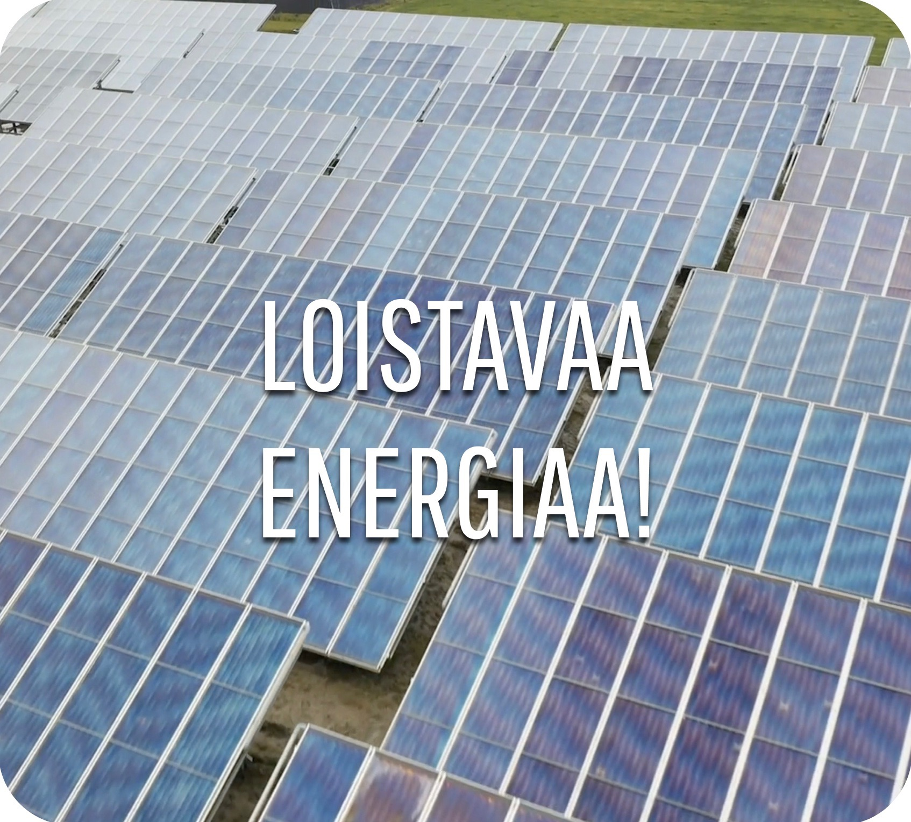

Vaikka talvi on Suomessa pitkä, on se pimeä vain marraskuusta tammikuuhun. Jo helmikuussa tuotanto taas kasvaa nopeasti päivien pidetessä. Suurin hyöty aurinkopaneeleista Suomessa saadaan maalis-syyskuun aikana, jolloin parhaimmillaan saamme auringosta energiaa jopa 20 tunnin ajan yhden vuorokauden aikana. Etelä-Suomeen asennettava aurinkopaneelijärjestelmä tuottaa noin kahdessa vuodessa sen määrän energiaa, joka laitteiston tuottamiseen on kulunut.
Tuottaessasi osan sähköstä aurinkoenergialla, olet mukana vaikuttamassa ilmastonmuutoksen etenemiseen. Aurinkoenergiaa käyttöön ottaessa on mahdollista luopua hiilidioksidipäästöjä aiheuttavista tuotantomuodoista vastaavalla määrällä. Aurinkopaneelin hankkiminen on siis ekoteko, joka myös ennen pitkää maksaa itsensä takaisin.
Aurinkosähkön tuottaminen perustuu auringon säteilyenergian muuttamiseen sähkövirraksi. Auringon säteilemä energia koostuu pienistä hiukkasista eli fotoneista. Suomessa aurinkopaneelit tuottavat kesällä paremmin kuin talvella, sillä valoa on enemmän kesäisin.

"Tulevaisuudessa kaksi kolmasosaa päivittäisestä energiatarpeesta saadaan suoraan uusiutuvista energialähteistä.
Aurinkoenergialla on tässä merkittävä rooli.
Samalla energiantuotannosta tulee osa ihmisten arkea: ihmiset tuottavat ja osittain myös käyttävät itse tuottamaansa energiaa,
ja ylimääräinen energia syötetään verkon kautta muille käyttäjille. Olemme siis samaan aikaan sekä energian kuluttajia että tuottajia."
- Christian Breyer, aurinkotalouden professori, LUT University
Aurinkopaneelit pysyvät kunnossa ilman aktiivista huolenpitoa, joten ylläpitokustannukset ovat minimaaliset.
Aurinkopaneelin tuottama sähkö, jota käyttäjä ei itse pysty hyödyntämään, voidaan myydä sähköpörssiin. Tällöin energiatuotanto ei mene hukkaan esimerkiksi poissaollessa.
Paneeleiden käyttöikä on yleensä noin 20-30-vuotta.
Aurinko säteilee maahan joka päivä enemmän energiaa kuin tarvitsemme koko maapallon sähköntarpeiden täyttämiseen.
Aurinkosähkön suosion kasvaessa, aurinkopaneelit nostavat kotisi arvoa asuntomarkkinoilla.
Aurinkoenergia on riskitön ja ympäristöystävällinen sijoitus, jolla on suomalaisia työllistävä vaikutus.
Aurinkosähköjärjestelmään liittyvästä asennustyöstä on mahdollista saada kotitalousvähennystä.
Yleisin aurinkopaneelien sijoituspaikka on rakennusten katot, mutta paneelit voidaan sijoittaa myös maahan, esimerkiksi pellolle tai piha-alueelle.
Aurinkosähköllä pystyy tuottamaan noin 15–25 % omasta sähkön kulutuksesta.
Aurinkopaneeleilla tuotettu sähkö ei vapauta haitallisia päästöjä ilmaan.